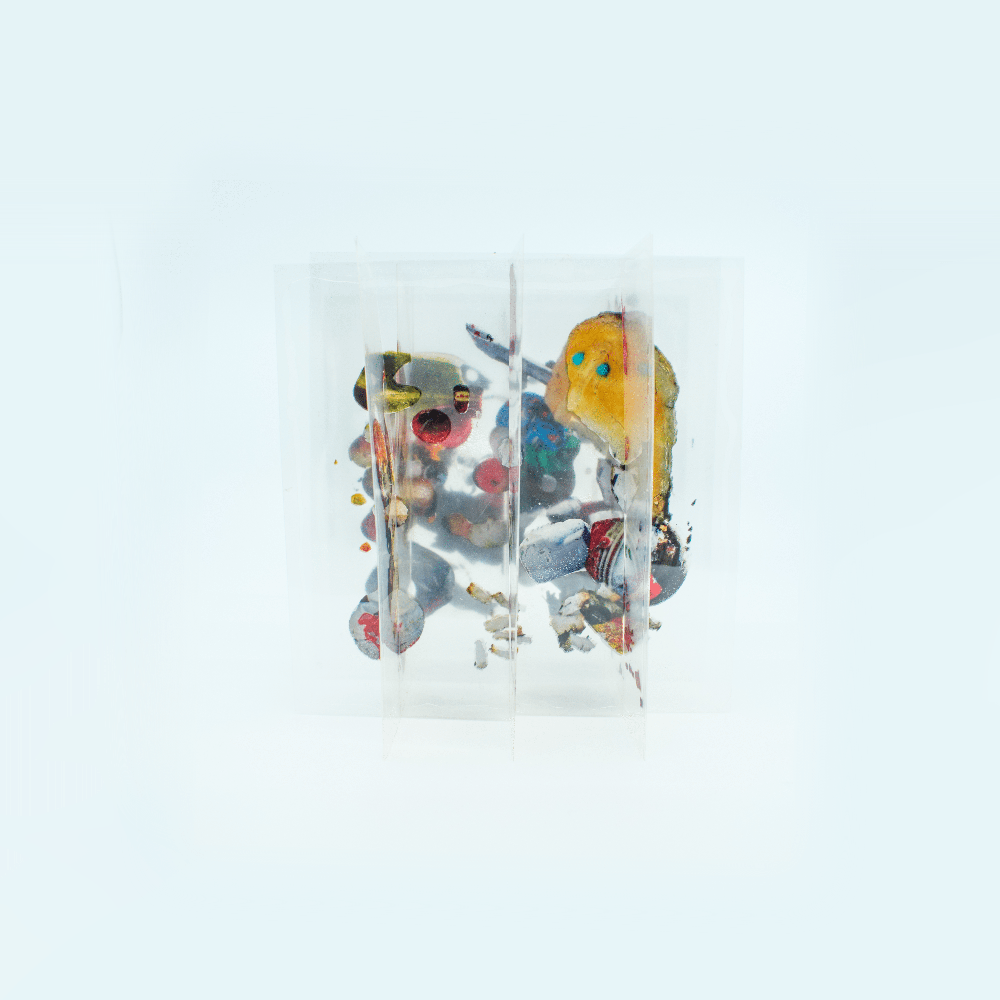
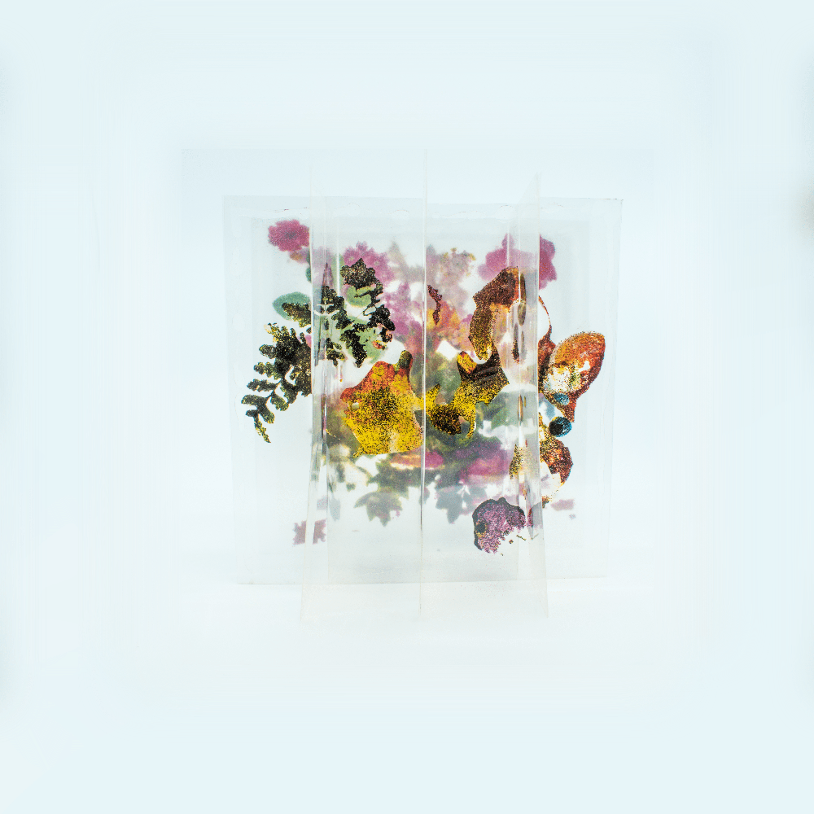
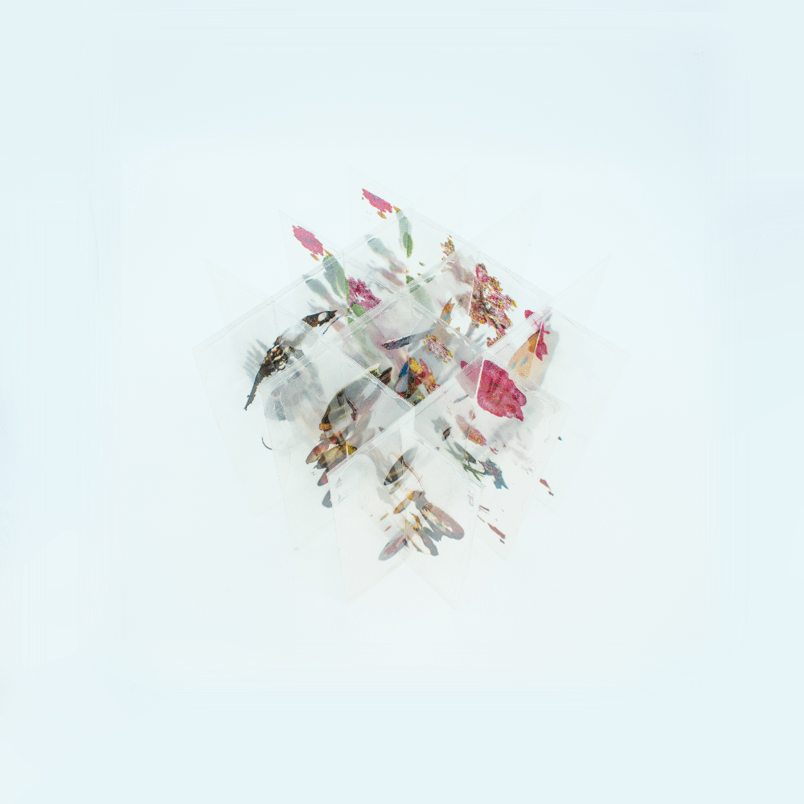
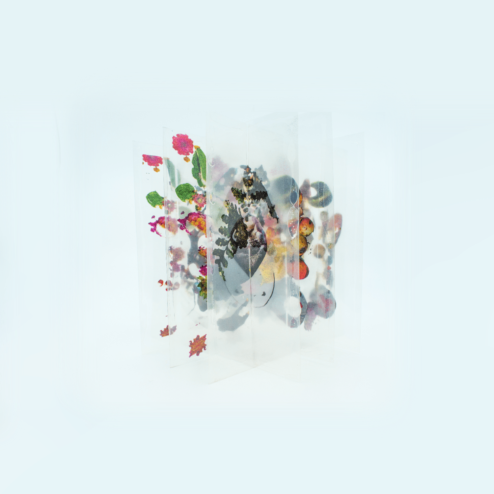

A 10" x 10" sliceform acetate cube depicting the hidden garbage of Toronto.
...Our trash is whisked away in the early hours, & it is easy to forget the sheer amount of waste our society creates because of this efficient process. Unless the garbage workers strike or one firsthandedly visits a landfill, it is easy for many people to not comprehend the true reality of humanity's problem with creating excessive waste. This cubic art piece intends to challenge this; as the viewer walks towards it, beautiful nature imagery is depicted that subsequently transitions into images of garbage as you begin to then walk past it. The artwork's abstract depictions blur the physical between the opposing ideas of nature & man-made trash, & before you can realize it has happened, natural imagery has transformed into garbage, & garbage imagery into nature. Made with photographs, Blender, acetate, & white paint.

3d animation of ideal outcome

detail view of garbage collage

detail view of nature collage

angled view

angled view
A 10" x 10" sliceform acetate cube depicting the hidden garbage of Toronto.
Our trash is whisked away in the early hours, & it is easy to forget the sheer amount of waste our society creates because of this efficient process. Unless the garbage workers strike or one firsthandedly visits a landfill, it is easy for many people to not comprehend the true reality of humanity's problem with creating excessive waste. This cubic art piece intends to challenge this; as the viewer walks towards it, beautiful nature imagery is depicted that subsequently transitions into images of garbage as you begin to then walk past it. The artwork's abstract depictions blur the physical between the opposing ideas of nature & man-made trash, & before you can realize it has happened, natural imagery has transformed into garbage, & garbage imagery into nature. Made with photographs, Blender, acetate, & white paint.